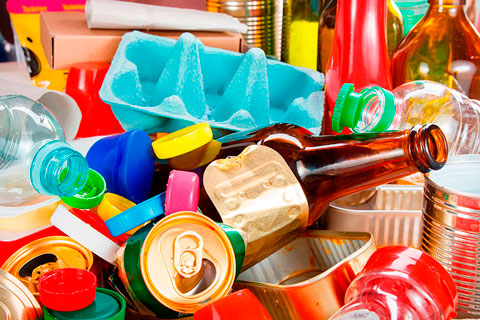
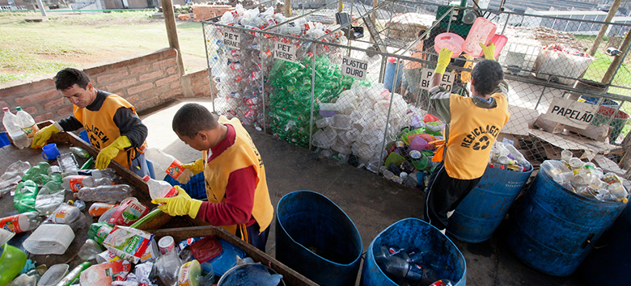
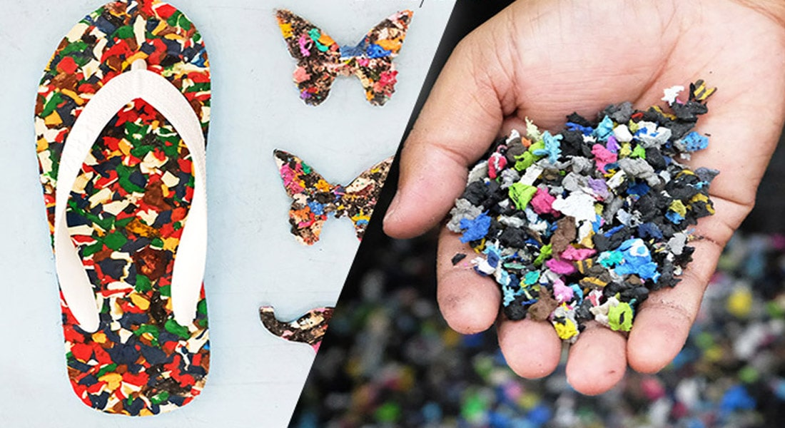

O que é Reciclagem?
A reciclagem é o processo de transformação de materiais descartados em novos produtos para evitar o desperdício de materiais potencialmente úteis, reduzir o consumo de matérias-primas frescas, diminuir o uso de energia, reduzir a poluição do ar (através da incineração) e da água (através de aterros sanitários) e diminuir as emissões de gases de efeito estufa em comparação com a produção de novos materiais.
Os materiais recicláveis incluem muitos tipos de vidro, papel, metal, plástico, têxteis e componentes eletrônicos. A compostagem ou outros usos de resíduos biodegradáveis, como resíduos alimentares ou de jardim, também são considerados reciclagem.
Abaixo estão alguns exemplos visuais de reciclagem em ação:


